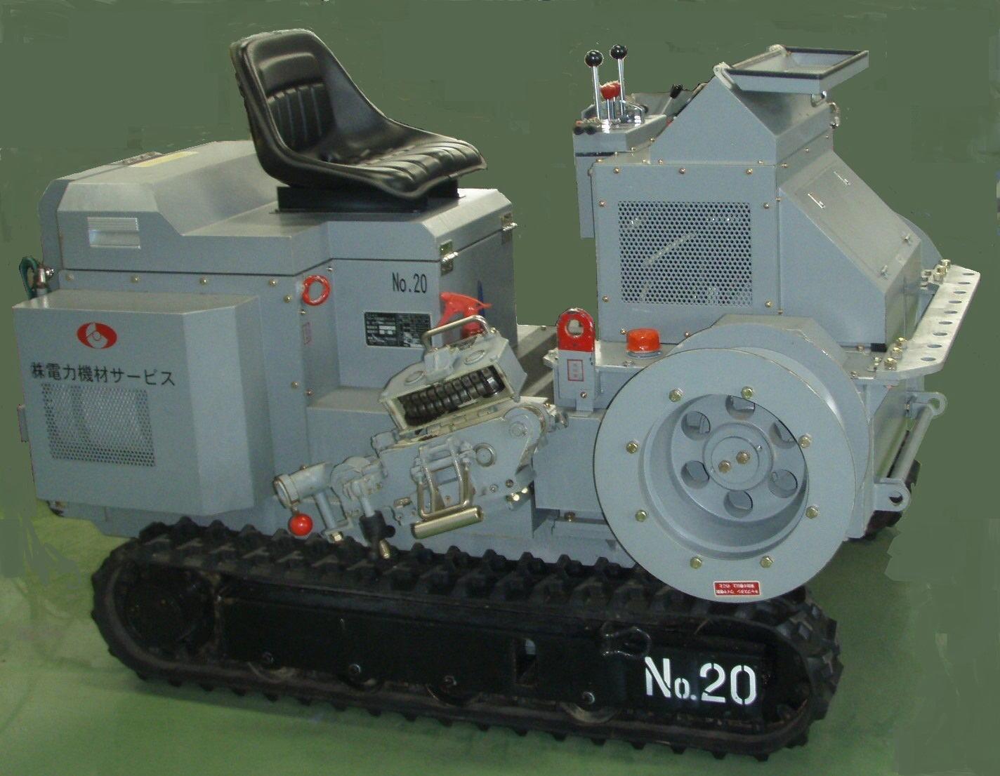
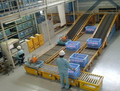
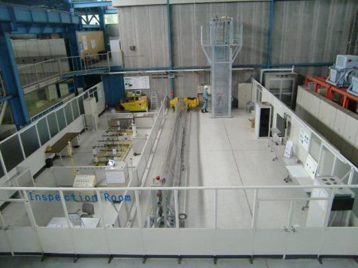
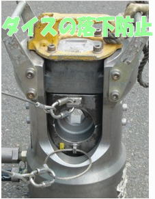
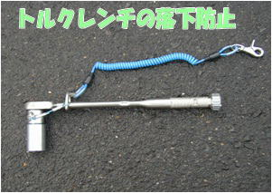

㈱電力機材サービスは送電線工事機材をレンタルする会社です。
TEL. 03-5933-6560
〒114-0003 東京都北区豊島6丁目9番5号 KDK王子ビル5階
サービス／製品一覧SERVICE&PRODUCTS
| サービス一覧 | 製品一覧 | |||
| 機械・工具類のレンタル | 安全用具のレンタル | 機械・工具の試験・校正 | 保管・管理 (工事中) |
落下防止対策 |
サービス一覧
「機械・工具類のレンタル」
| № | 名 称 | 主 な 仕 様 | 種別 | 主要機種の写真 |
| 1 | 延線車 | 1.0 ～ 1.5m | 架線 | ○ |
| 2 | 架線ウインチ | 5t ～ 10t | 架線 | ○ |
| 3 | 緊線ウインチ | 0.7t ～ 3t | 架線 | ○ |
| 4 | リールワインダー | エンジン型，電動型 | 架線 | ○ |
| 5 | ドラム架台 | 組立式，電磁式 | 架線 | ○ |
| 6 | 圧縮ポンプ・ヘッド | 40t ～ 200t | 架線 | ○ |
| 7 | 金車 | 吊金車，ウレタン金車，プレス金車各種 | 架線 | ○ |
| 8 | カムアロング本体・楔 | 各種 | 架線 | ○ |
| 9 | 宙乗器 | 単導体，複導体，4導体，6導体 | 架線 | ○ |
| 10 | 接地用具 | 66kV～500kV | 架線 | ○ |
| 11 | ジブ・クレーン | 2.8t吊り | 基礎 | |
| 12 | ミニクロ・クレーン | 2.8t吊り | 基礎 | |
| 13 | ワークステージ | 3.6m～5.0m | 基礎 | |
| 14 | クライミング・クレーン | 20t-m，36t-m，46t-m | 組立 | ○ |
| 15 | Mtライナー | 2t～3t | 仮設 | |
| 16 | 仮鉄塔 | アーム長 24m～40m | 仮設 | |
| 17 | 仮鉄柱 | 3.6m | 仮設 | |
| 18 | 仮設ステージ | 1.5t | 仮設 | |
| 19 | トルクレンチ | N4.5kN～86kN | 計測器 | |
| 20 | 張力計 | 延線，支線 | 計測器 | |
| 21 | 接地抵抗測定器 | Ｌ―９，Ｌ―１０ | 計測器 | ○ |
| 22 | 貫入試験器 | 各種 | 計測器 | |
| 23 | 自記温度計 | 1,7,31日 | 計測器 |
※ご注意；
(1)各機械・工具とも、保有数に限りが有りますので、レンタルを計画する場合は必ず当社にお問合せ願います。
(2)レンタル料金は、当社にお問い合わせください。

「安全用具のレンタル」
| № | 名 称 | 参考写真 |
| 1 | キーロック方式安全ロープ | ○ |
| 2 | 安全器 | |
| 3 | 安全ブロック | |
| 4 | 導電服 |
※ご注意；
(1)各用具とも保有数に限りが有りますので、詳細は当社にお問い合わせ願います。
(2)レンタル料金は、当社にお問い合わせください。

「機材・工具の試験・校正」
| № | 試験・校正 | 詳細資料 | 備考 |
| 1 | 接地器具絶縁耐力測定検査 | 有り | |
| 2 | トルクレンチ精度検査(校正) | 有り |
※ご注意；
(1)検査料金、所要日数等は、当社にお問い合わせください。
「保管・管理」
工事中
製品一覧
「工具類の落下防止対策」
圧縮接続ダイスやトルクレンチの落下防止対策を開発しました。
お客様が保有しているダイスやトルクレンチに、落下防止のワイヤーを取り付けています。
詳細は、当社までご相談ください。
写真、又は、下記をクリックすると概要がわかります。
・ダイス落下防止
・トルクレンチ落下防止

バナースペース
株式会社電力機材サービス
〒114-0003
東京都北区豊島6丁目9番5号
KDK王子ビル5階
TEL 03-5933-6560
FAX 03-5933-6561